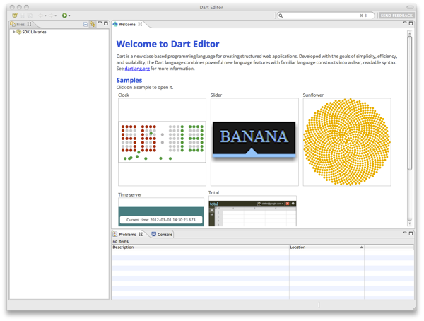
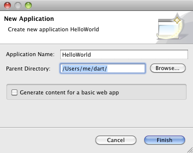
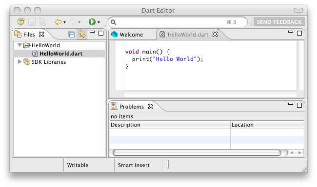
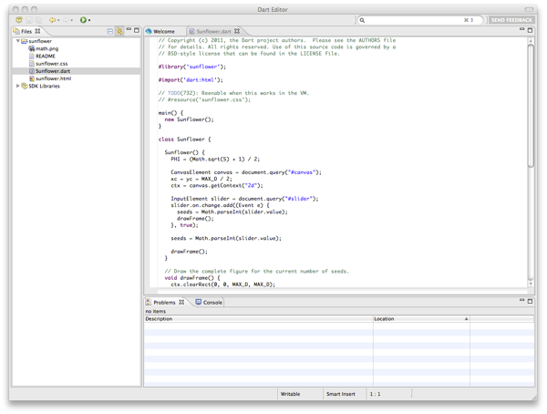
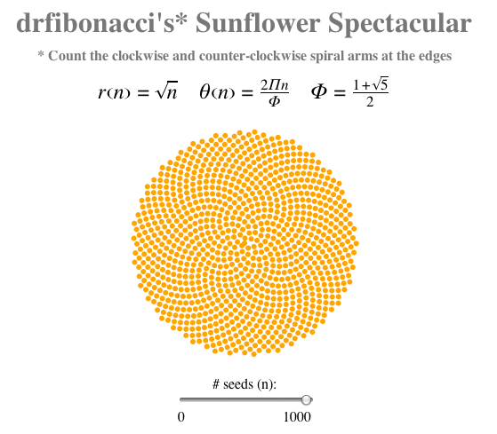

Productive. Lightweight. Open source.
{% include downloads/_dart-editor.html %}
Follow this tutorial to install and use Dart Editor on {% include os-choices.html %}
In this step, you'll install Dart Editor and, if necessary, a Java runtime environment.
Download and unzip the Dart Editor ZIP file, using the Download button at the top of this page. If you don't know whether to download the 32-bit or 64-bit version, see Getting your system architecture in the Troubleshooting page. If you don't know whether to download the 32-bit or 64-bit version, see Getting your system architecture in the Troubleshooting page.
After you unzip the archive,
your Dart installation directory
contains the DartEditor executable file and several subdirectories,
including a samples directory.
If you don't already have a Java runtime, download and install it.
You can get JDK 7 from Java SE Development Kit 7 Downloads.
jre.
Go to your Dart installation directory,
and double-click the DartEditor executable file
 .
.
You should see the Dart Editor application window appear, with a Welcome page that looks something like this:

Having problems? See Launching Dart Editor in the Troubleshooting page.
It's easy to create a simple web or command-line app from scratch. This step walks you through creating a command-line app.
Click the New Application button
 (at the upper left of Dart Editor).
Alternatively, choose File > New Application
from the Dart Editor menu.
A dialog appears.
(at the upper left of Dart Editor).
Alternatively, choose File > New Application
from the Dart Editor menu.
A dialog appears.
Type in a name for your application—for
example, HelloWorld.
If you don't like the default directory,
type in a new location or browse to choose the location.
Unselect Generate content for a basic web app if it's selected. Then click Finish to create the initial files for the app.

A default Dart file appears in the Edit view, and its directory appears in the Files view. Your Dart Editor window should look something like this:

Click the Run button
 to run your new app.
to run your new app.
For command-line apps, the output of print() appears at the bottom right, in a new tab next to the Problems tab.
The Dart Editor bundle comes with several samples. In this step, you'll open a sample web app and run it in Dartium.
Click the Welcome tab. Or choose Welcome Page from the Tools menu.
In the Welcome tab, click the image labeled Sunflower.
The Editor view now displays the contents of sunflower.dart,
and the Files view lists the files
in the Sunflower app's directory.
Dart Editor should look something like this:

{% comment %} {NOTE about terminology: The Workbench User Guide says "view", so I'm using that since I figure that might be familiar to Eclipse users.} {% endcomment %}
Click the Run button
 .
Dart Editor launches Dartium,
which displays sunflower.html.
.
Dart Editor launches Dartium,
which displays sunflower.html.
Move the slider to display the sunflower. For details about the Sunflower example, read the Sunflower Code Walkthrough.

Having problems? See Launching Dartium in the Troubleshooting page.
Now that you know the basics, you can learn more about Dart Editor and help improve it.
See the Dart Editor homepage for help on using Dart Editor's expanding feature set.
Click the SEND FEEDBACK link (at the upper right of the Dart Editor window) whenever you notice a problem or have an idea for improving Dart Editor. We'll open a new issue for you, if appropriate, without disclosing your sensitive or personally identifiable information.
Or you can just create a new Dart Editor issue.